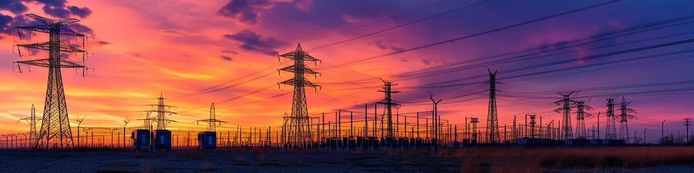
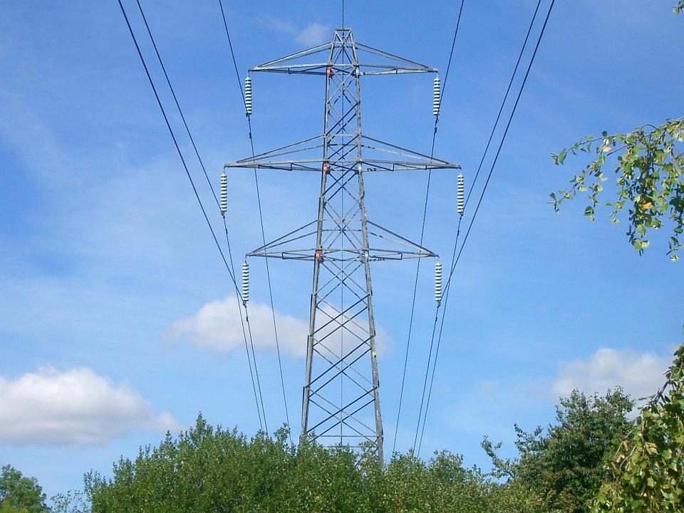
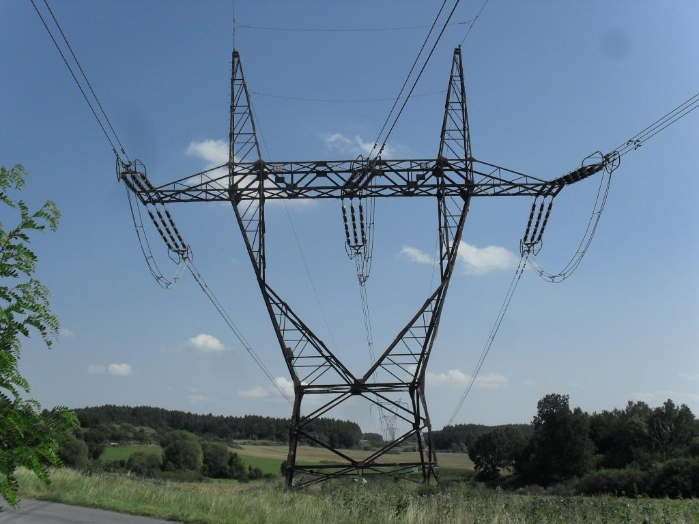
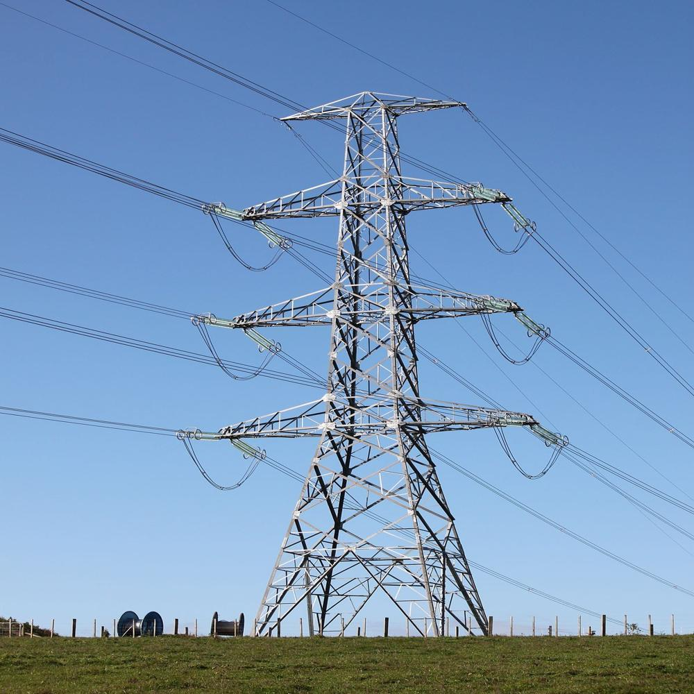
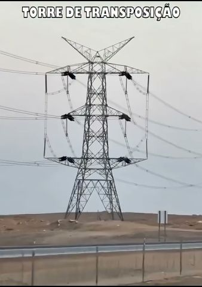
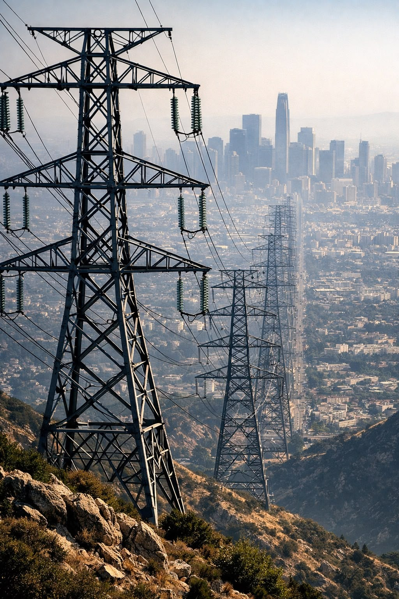
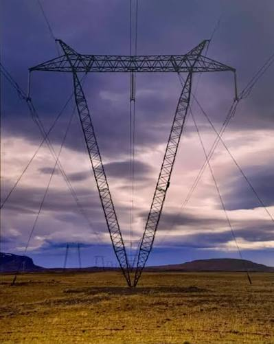

Cada formato tem uma razão. Descubra as diferentes estruturas que compõem as linhas de transmissão.


Sustenta os cabos condutores em trechos retos da linha.

Suporta a tração mecânica dos cabos e grandes vãos.

Projetada para suportar os esforços na mudança de direção da linha.

Permite a troca física de posição das fases para equilibrar as reatâncias.
| TIPO | FUNÇÃO | APLICAÇÃO |
|---|---|---|
| Suspensão | Sustentação | Trechos retos |
| Ancoragem | Tração | Pontos de ancoragem |
| Ângulo | Mudança de direção | Curvas |
| Transposição | Troca de fases | Pontos específicos |

Por que esse nome? O termo "autoportante" significa que a torre se sustenta por si mesma. Elas possuem uma base larga em formato de treliça rígida que distribui todo o peso e resiste aos esforços do vento sem precisar de apoios externos. São ideais para locais acidentados ou áreas urbanas onde há restrição de espaço no solo.

Por que esse nome? "Estai" são os cabos de aço extras que saem do corpo da torre e são ancorados firmemente no chão. Diferente da autoportante, a torre estaiada usa esses cabos de aço para se manter em equilíbrio e estabilidade. Como utilizam menos aço na estrutura metálica central, são mais leves e econômicas, sendo muito comuns em grandes extensões planas, como vales e campos abertos.